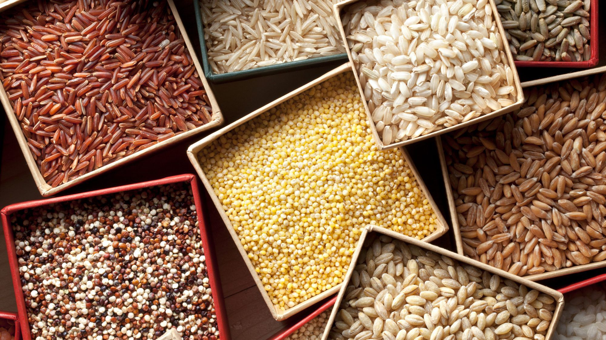
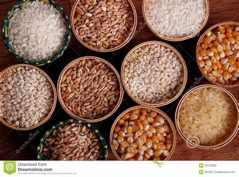
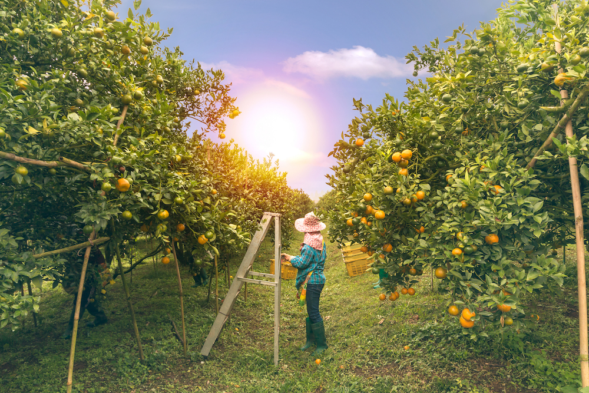
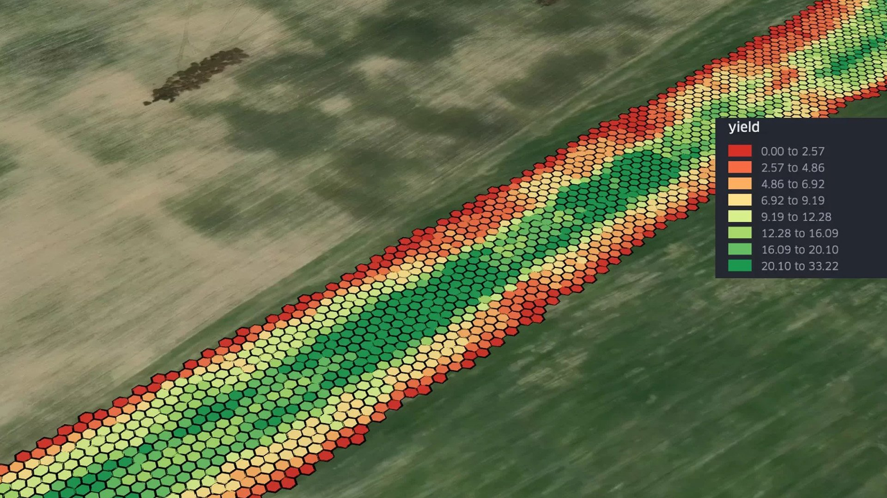
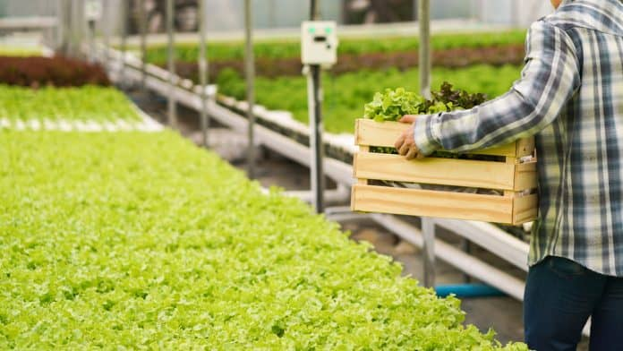

|
Sanchita Das I'm a PhD student in Operations at University of Washington in Seattle, where I work on resource allocation problems in agriculture operations, and am advised by Professors Masha Shunko and Leonard Bousseaix. I have worked on identifying and solutioning operations design problems for Flipkart (Walmart) supply chain network, India's Public Distribution System, and US Apple Farm Supply Chains. I did my Masters at MIT in Cambridge, where I was advised by Dr. Christopher Mejia from the Food and Retail Operations Lab, and a predoc at ISB, Hyderabad where I was advised by Professors Sarang Deo and Sripad Devalkar. I completed my undergraduate education from IIT Kharagpur in India. |

|
ResearchI'm currently interested in practise based research to inform operations design for food and agriculture systems. I employ techniques from optimization and causal inference. Most of my research is about modelling the physical world from field observations and identifying design levers that can be employed to optimize efficiency and/or equity. Representative working projects are highlighted. |
|  |
Economic Impact of Introduction of Coarse Cereals to India's Public Distribution System
Sripad Devalkar*, Sarang Deo*, Ashwini Chhatre, Bhavna Jha, Saransh Jhunjhunwala, Sanchita Das Analysis of economic impact of introduction of coarse cereals to India's public distribution system and allowing their decentralized procurement from different states in the country. |
 |
Delivering Locally Sourced Nutritious Foodbaskets to India
Sanchita Das, Christopher Mejia Argueta, Tatiana Sadalla Collese , Reuben Narad Segmentation of India's most vulnerable population by their taste preferences, design of customized food baskets of pulses, cereals, millets and their large scale delivery model. Distribution network specified on the base of India's current Public Distribution System. |
 |
Climate Smart Staffing for Agriculture Operations
Sanchita Das, Masha Shunko, Leonard Boussioux, Capacity planning of harvest labor for apples in response to rolling forecasts of fruit maturity dates due to climate change induced uncertainty. |
 |
Identifying Hotspots of Low and Variable Yields of Cereals in India
Leonard Boussioux*, Sanchita Das, Shweta Manjunath Deep Learning Class Project, 2023 Comparison of NLP and LLM based TabText Method vs Traditional Linear Method of Yield Estimation in India's Cereal Producing Regions. |
 |
Apertures in Agriculture Seeking Attention
Sanchita Das*, Ramya Srinivasan*, NeurIPS Workshop 2021 - AI for Science, Mind the Gaps An overview of the most pressing operational challenges in agriculture faced by producers, consumers, and the biodiversity across countries. |
{kind=link}
{kind=link}
{kind=link}
{kind=link}
Services and Recognitions |
|
Teaching |
|
|
Feel free to steal this website's source code. Do not scrape the HTML from this page itself, as it includes analytics tags that you do not want on your own website — use the github code instead. Also, consider using Leonid Keselman's Jekyll fork of this page. |